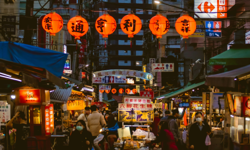
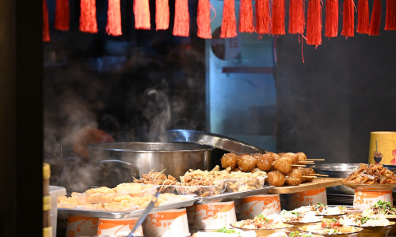

-
 探索夜市
走進台北的熱鬧夜市，尋找我們精選的小吃，包括鹽酥雞、大腸包小腸、蚵仔煎、珍珠奶茶和臭豆腐。每一口都讓你愛上夜市的美味！
-
 拍照留念
購買指定小吃後，記得拍一張包含小吃和手勢「8」的照片。這個手勢不僅是你的參與證明，也是你的獨家回憶！
美食饕客們！讓我們一起參加台北夜市美食活動，來場味蕾的冒險！
美食饕客們！讓我們一起參加台北夜市美食活動，來場味蕾的冒險！
走進台北的熱鬧夜市，尋找我們精選的小吃，包括鹽酥雞、大腸包小腸、蚵仔煎、珍珠奶茶和臭豆腐。每一口都讓你愛上夜市的美味！
購買指定小吃後，記得拍一張包含小吃和手勢「8」的照片。這個手勢不僅是你的參與證明，也是你的獨家回憶！
鹽酥雞
外酥內嫩的炸雞塊，加上香料與九層塔，美味無比。
大腸包小腸
台灣獨特的小吃，將香腸包在米腸內，口感豐富。
蚵仔煎
以蚵仔（牡蠣）、蛋液和蔬菜為主要材料製作的煎餅。
珍珠奶茶
混合了紅茶、牛奶和珍珠，是夜市必試的飲品。
臭豆腐
獨特的發酵豆腐，外脆內嫩，搭配酸菜更加美味。
驚喜好禮等你拿！參加活動後，我們會從所有參與者中抽取幸運得主，送出豐富的獎品，包括夜市購物券、限量周邊商品等，讓你的美食之旅更添精彩！快來加入我們的夜市美食大冒險吧！這是一場吃遍台北夜市的挑戰，也是與朋友們分享美好時光的機會。記得從8月1日開始參加，讓我們一起探索台北夜市的無窮魅力！